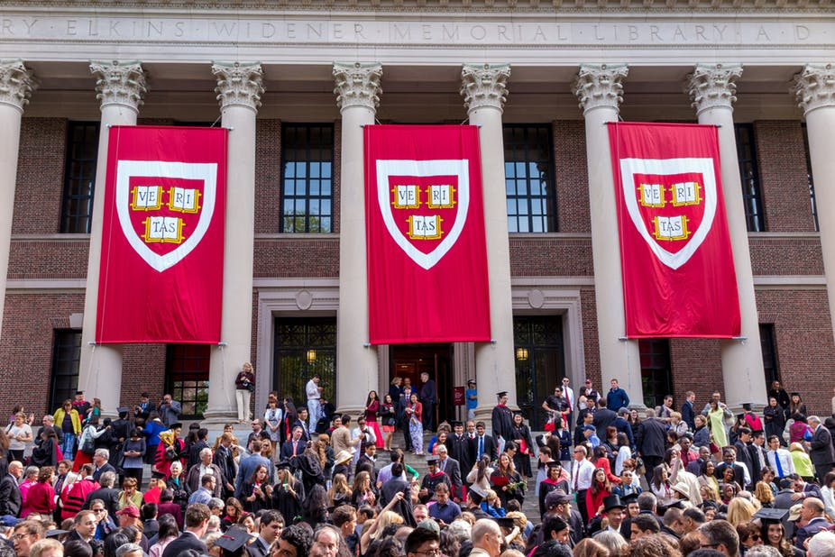
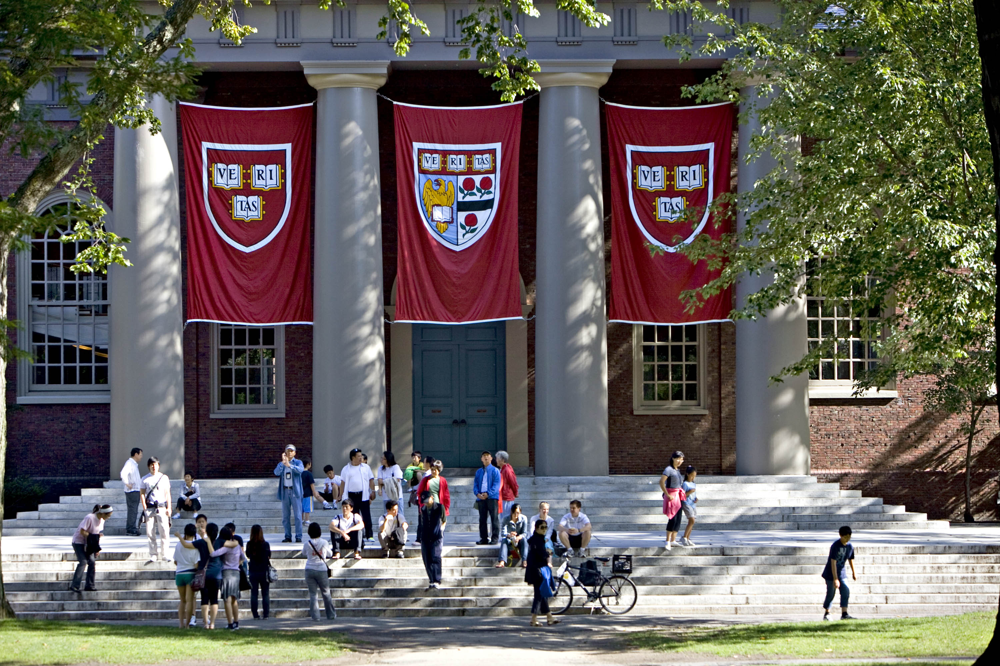

Educacion Superior
Universidad De Harvard
La Universidad Harvard, conocida popularmente en español como Universidad de Harvard, es una universidad privada ubicada en la ciudad de Cambridge (Massachusetts) en Estados Unidos. Fue fundada en 1636 y nombrada así por el clérigo John Harvard, su primer benefactor. Es la institución de educación superior más antigua de los Estados Unidos. Su historia, influencia y riqueza la han convertido en una de las universidades más prestigiosas del mundo

El primer claustro estuvo formado por congregacionales y unitarios de la primera escuela de la universidad. Su currículum y su cuerpo estudiantil fueron gradualmente secularizados durante el siglo XVIII, y para el siglo XIX, Harvard había emergido como el establecimiento cultural central entre las élites de Boston. Después de la Guerra Civil Estadounidense, la larga permanencia del presidente Charles W. Eliot (1869-1909) transformó la universidad y las escuelas profesionales afiliadas en una moderna universidad de investigación; Harvard fue miembro fundador de la Association of American Universities en 1900.
Harvard es una universidad de investigación grande y altamente residencial. El costo nominal de asistencia es alto, pero la gran dotación de la universidad le permite ofrecer generosos paquetes de ayuda financiera. Opera varios museos de arte, cultura y ciencias, junto con la Biblioteca de Harvard, que es el sistema de bibliotecas privadas y académicas más grande del mundo, que comprende 79 bibliotecas individuales con más de 18 millones de volúmenes.
